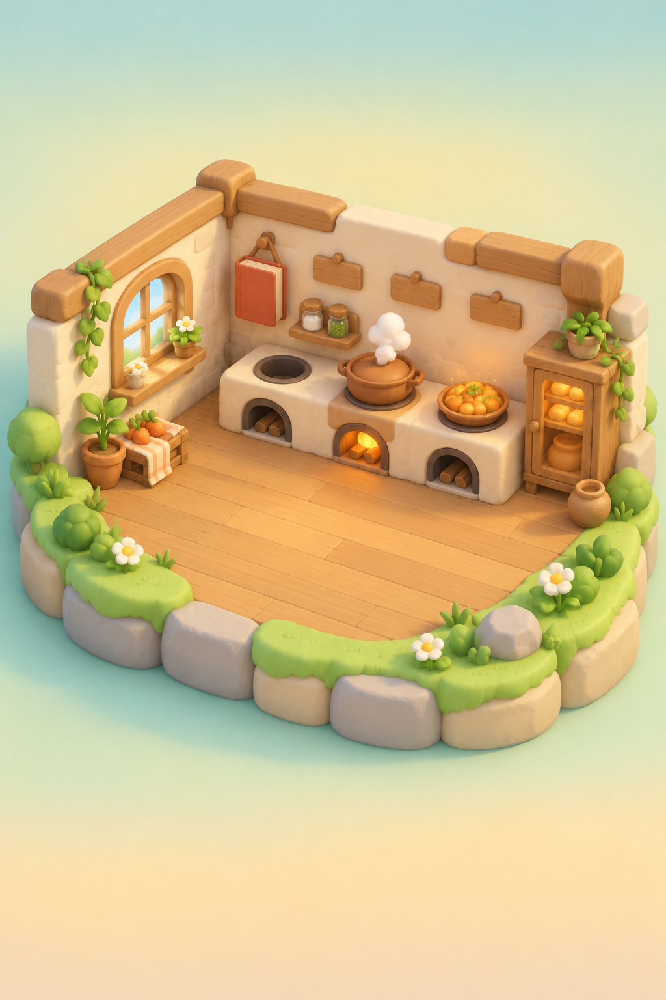

Any fish
Potato · have 1
Cooking Lv4 · 3rd slot
?
·
Rare
·
30 s
·
3 ingredients
·
Clue found
Stove 1/3
· Empty
· Cooking Lv3
Cookbook
9/48
Experiment
All
48
Can cook
7
Common
Fine
Rare
Legendary
Unknown dish ·
Rare
+70 Energy
· 30 s · 3 ingredients · Clue found
A Mystery Dish left a clue: potato goes in. Find the rest at the stove.
Ingredients
Any fish
?
Potato
×1 · have 1
3rd slot
Lv4
First cooked · +40 Cooking XP
Cooking Lv4 · 85 XP to go
Try in Experiment ›
Mastered
Tasted
Shop
142
/200
+1 in
2:41
230
3
Today
·
Deliver 4 Fine fish
Shanghai
·
Kitchen
safe top 120
safe bottom 100
quick bar bottom · 124 from bottom
slots top · 160 tall
HUD row 1 · 48–176
HUD row 2 · 192–256
FAB 176